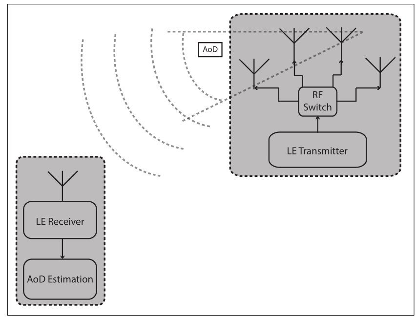

LE Direction Finding
The purpose of this document is to give an overview of the direction finding methods to help with product development using AoA/AoD.
AoA/AoD represents two different direction finding methods from which APP can choose based on actual needs. More information can be found in chapters Angle of Arrival (AoA) Method and Angle of Departure (AoD) Method.
If multiple antennas are supported and APP needs to switch antennas, developers can refer to the chapter Antenna Switching for more information.
AoA/AoD can support two scenarios, more information can be found in chapters AoA/AoD in Connection-oriented Scenario and AoA/AoD in Connectionless Scenario.
An LE device can make its direction available for a peer device by transmitting direction finding enabled packets. Using direction information from several transmitters and profile-level information giving their locations, an LE radio can calculate its own position.
This feature is supported over the LE Uncoded PHYs, but not over the LE Coded PHY.
Terminology and Concepts
Angle of Arrival (AoA) Method
An LE device can make its direction available to a peer device by transmitting direction finding enabled packets using a single antenna.
The peer device, consisting of an RF switch and antenna array, switches antennas while receiving part of those packets and captures IQ samples. The IQ samples can be used to calculate the phase difference in the radio signal received using different elements of the antenna array, which in turn can be used to estimate the angle of arrival (AoA).

Angle of Arrival Method
Angle of Departure (AoD) Method
A device consisting of an RF switch and antenna array can make its angle of departure (AoD) detectable by transmitting direction finding enabled packets, switching antennas during transmission.
The peer device receives those packets using a single antenna and captures IQ samples during part of those packets. Determination of the direction is based on the different propagation delays of the LE radio signal between the transmitting elements of the antenna array and a receiving single antenna. The propagation delays are detectable with IQ measurements. Any receiving LE radio with a single antenna that supports the AoD feature can capture IQ samples and, with the aid of profile-level information specifying the antenna layout of the transmitter, calculate the angle of incidence of the incoming radio signal.
{kind=link}

Angle of Departure Method
Antenna Switching
A device may support an antenna array consisting of two or more antennae that are controlled by a switch. The device switches between the antennae either while receiving the Constant Tone Extension of a packet (Angle of Arrival method) or while transmitting the Constant Tone Extension of a packet (Angle of Departure method).
Feature Set
GAP Capacity
The functions provided by GAP API is as below.
Antenna Switching: Including functions to read the switching rates, the sampling rates, the number of antennae, and the maximum length of a transmitted Constant Tone Extension supported by the device.
AoA/AoD in Connection-oriented Scenario: Including functions to initiate the Constant Tone Extension Request Procedure by sending a Connection CTE Request in a connection-oriented scenario.
AoA/AoD in Connectionless Scenario: Including functions to initiate the Connectionless Constant Tone Extension Procedure in a connectionless scenario.
Provided APIs
LE Direction Finding APIs can be divided into Antenna Switching APIs, AoA/AoD in Connection-oriented Scenario APIs and AoA/AoD in Connectionless Scenario APIs.
The table below shows the simple description of Antenna Switching APIs. Antenna Switching related APIs are defined in subsys\bluetooth\bt_host\inc\gap_aox.h.
Function Name |
Description |
|---|---|
Read antenna information |
The table below shows the simple description of AoA/AoD in Connection-oriented Scenario APIs. AoA/AoD related APIs in a Connection-oriented Scenario are defined in subsys\bluetooth\bt_host\inc\gap_aox_conn.h.
Function Name |
Description |
|---|---|
Set Connection CTE Receive Parameters |
|
Set Connection CTE Transmit Parameters |
|
Request the Controller to start or stop initiating the Constant Tone Extension Request procedure |
|
Request the Controller to respond to Constant Tone Extension Request |
The table below shows the simple description of AoA/AoD in Connectionless Scenario APIs. AoA/AoD related APIs in Connectionless Scenario are defined in subsys\bluetooth\bt_host\inc\gap_aox_connless_transmitter.h and subsys\bluetooth\bt_host\inc\gap_aox_connless_receiver.h.
Function Name |
Description |
|---|---|
Initialize the number of advertising sets for the connectionless transmitter |
|
Request the Controller to set parameters for the transmission of Constant Tone Extensions in periodic advertising |
|
Request the Controller to enable or disable the use of Constant Tone Extensions in periodic advertising |
Function Name |
Description |
|---|---|
Request the Controller to enable or disable capturing IQ samples from the Constant Tone Extensions of periodic advertising packets in the periodic advertising train |
Functions
GAP Message
GAP LE AoA/AoD callback messages are used to notify the APP about the execution status of a function after the API has been invoked.
GAP messages are defined in subsys\bluetooth\bt_host\inc\gap_aox.h.
Bluetooth message related to Antenna Switching is the following:
#define GAP_MSG_LE_AOX_READ_ANTENNA_INFORMATION 0x01 //Response msg type for le_aox_read_antenna_information
Bluetooth messages related to AoA/AoD in a Connection-oriented Scenario are the following:
#define GAP_MSG_LE_AOX_SET_CONN_CTE_RECEIVE_PARAMS 0x22 //Response msg type for le_aox_set_conn_cte_receive_params
#define GAP_MSG_LE_AOX_CONN_CTE_RESPONSE_ENABLE 0x23 //Response msg type for le_aox_conn_cte_response_enable
#define GAP_MSG_LE_AOX_CONN_CTE_REQUEST_ENABLE 0x24 //Response msg type for le_aox_conn_cte_request_enable
#define GAP_MSG_LE_AOX_CONN_IQ_REPORT_INFO 0x25 //Notification msg type for connection IQ report
#define GAP_MSG_LE_AOX_CTE_REQUEST_FAILED_INFO 0x26 //Notification msg type for failure of CTE request
Bluetooth messages related to AoA/AoD in a Connectionless Scenario are the following:
#define GAP_MSG_LE_AOX_CONNLESS_TRANSMITTER_SET_CTE_TRANSMIT_PARAMS 0x40 //Response msg type for le_aox_connless_transmitter_set_cte_transmit_params
#define GAP_MSG_LE_AOX_CONNLESS_TRANSMITTER_STATE_CHANGE_INFO 0x41 //Connectionless CTE transmitter state change info
#define GAP_MSG_LE_AOX_CONNLESS_RECEIVER_SET_IQ_SAMPLING_ENABLE 0x50 //Response msg type for le_aox_connless_receiver_set_iq_sampling_enable
#define GAP_MSG_LE_AOX_CONNLESS_RECEIVER_CONNLESS_IQ_REPORT_INFO 0x51 //Notification msg type for LE connectionless IQ report info
AoA/AoD in Connection-oriented Scenario
AoA/AoD in Connection-oriented Scenario Features
In AoA/AoD connection-oriented scenario, Initiator and Responder shall support the following features:
Initiator Role Required Features
Connection CTE Request
Support Receiving Constant Tone Extensions feature.
Support Extended Reject Indication feature.
Support the following sections on all supported PHYs that allow Constant Tone Extensions.
LL_CTE_REQ
LL_CTE_RSP
Constant Tone Extension Request procedure
Responder Role Required Features
Connection CTE Response
Support Extended Reject Indication feature.
Support the following sections on all supported PHYs that allow Constant Tone Extensions.
LL_CTE_REQ
LL_CTE_RSP
Transmitting Constant Tone Extensions
Constant Tone Extension Request procedure
Expose Features
The following features shall be enabled as defined in bin\rtl87x2x\bt_host_image\bt_host_x_x\bt_host_config.h.
F_BT_LE_5_1_SUPPORT
F_BT_LE_5_1_AOA_AOD_SUPPORT
F_BT_LE_5_1_AOX_CONN_SUPPORT
In a connection-oriented scenario, a device that can use AoA/AoD may initiate the Constant Tone Extension Request Procedure by sending a Connection CTE Request.
Constant Tone Extension Request Procedure
The Start and Stop Constant Tone Extension Request Procedure is shown in the following figure:

Start and Stop Constant Tone Extension Request Procedure
AoA/AoD in Connectionless Scenario
AoA/AoD in Connectionless Scenario Features
In AoA/AoD connectionless scenario, Transmitter and Receiver shall support the following features:
Transmitter Role Required Features
Connectionless CTE Transmitter
Support LE Periodic Advertising feature in Advertising state.
Support the following sections on all supported PHYs that allow Constant Tone Extensions.
Transmitting Constant Tone Extensions
Receiver Role Required Features
Connectionless CTE Receiver
Support LE Periodic Advertising feature in the Synchronization state.
Support the following sections on all supported PHYs that allow Constant Tone Extensions.
Receiving Advertising Physical Channel PDUs containing a CTEInfo field in the Extended Header
IQ Sampling
Expose Features
The following features to be enabled are defined in bin\rtl87x2x\bt_host_image\bt_host_x_x\bt_host_config.h.
Transmitter Role Required Features
F_BT_LE_5_1_SUPPORT
F_BT_LE_5_1_AOA_AOD_SUPPORT
F_BT_LE_5_1_AOX_CONNLESS_SUPPORT
F_BT_LE_5_0_SUPPORT
F_BT_LE_5_0_PA_SUPPORT
F_BT_LE_5_0_PA_ADV_SUPPORT
F_BT_LE_5_0_AE_ADV_SUPPORT
Receiver Role Required Features
F_BT_LE_5_1_SUPPORT
F_BT_LE_5_1_AOA_AOD_SUPPORT
F_BT_LE_5_1_AOX_CONNLESS_SUPPORT
F_BT_LE_5_0_SUPPORT
F_BT_LE_5_0_PA_SUPPORT
F_BT_LE_5_0_PA_SYNC_SUPPORT
F_BT_LE_5_0_AE_SCAN_SUPPORT
A device that can use AoA/AoD in a connectionless scenario shall be able to initiate the Connectionless Constant Tone Extension Procedure.
Connectionless Constant Tone Extension Procedure
Transmitting and Receiving Connectionless Constant Tone Extension Procedure is shown in the following figure:

Transmitting and Receiving Connectionless Constant Tone Extension Procedure